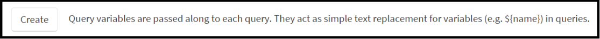

What is a Dashboard Variable?
A dashboard variable is a placeholder that allows you to dynamically change the components of a query. Dashboard variables simply enable text replacement; dashboard variables can contain metric names, filters, advanced functions, or even a string such as “)))”, which could be inserted at the end of an query. There are three types of dashboard variables: simple, list, and dynamic.
All Wavefront users can select and temporarily alter the value of a dashboard variable. <div markdown="span" class="alert alert-info" role="alert">While every Wavefront user can view dashboards, you must have Dashboard Management permission to manage dashboards. If you do not have permission, UI menu selections and buttons required to perform management tasks are not visible.</div>
Accessing Dashboard Variables
To access the set of dashboard variables associated with a dashboard, click the icon in the dashboard icon group at the far right of the task bar  .
.
The following shows a simple variable, which consists of a label (Zones), name (az), and value (tag=az-3 or source=app-3). The label should ideally provide some indication about what values the variable represents. You view the variable name by hovering over the label.

Creating a Dashboard Variable
-
Put your dashboard into edit mode by clicking the pencil icon at the far right of the task bar.
.-
If there are no dashboard variables already defined, click Create.

-
If there is at least one variable associated with the dashboard, click in the icon group at the far right of the existing variable field
 .
.
-
-
Click the icon. The Query Parameters dialog displays:

- Specify the variable name, label, and select the Variable Type. Fill in remaining fields depending on the variable type: simple, list, and dynamic.
- Click Hide from non-editors to make your dashboard variable non-viewable/non-changeable by all users when the dashboard is not in edit mode. The dashboard variable can still be used in ts() queries and becomes visible when you put the dashboard into edit mode.
Using Dashboard Variables
You use a dashboard variable by referencing its name in a ts() expression using the syntax ${variableName}. For example, to use the variable az, you specify the following query: ts(cpu.loadavg.1m, ${az}). When this query is executed, Wavefront replaces ${az} with the associated variable value: ts(cpu.loadavg.1m, tag=az-3 or source=app-3).
Simple Dashboard Variables
A simple dashboard variable maps a single variable to a single value. When you create a dashboard variable, by default the Variable Type is set to Simple.
Enter a variable name (case sensitive) and label. We suggest keeping the variable name short. For simple dashboard variables, enter the string of text that you’d like to replace the dashboard variable with in a ts() query when it’s executed. Click Accept.
To create a simple dashboard variable that represents a metric name, the text is set to the metric name “requests.latency”.

Click Save to save the dashboard and the dashboard variable. For this example, you can use variable in a ts() query as follows: ts(${Variable1}). By default this query returns requests latency data.
Changing Variable Values
You can quickly change the variable value in the Dashboard Variables section. For example you could display data for a different metric. Dashboard variables can be temporarily altered, but you must put the dashboard into edit mode in order to permanently save any changes.
To temporarily change the text for a simple dashboard variable, access the Dashboard Variables section, click the value, and replace the existing value with the text of your choosing.
List Dashboard Variables
A list dashboard variable maps a variable label to a list of labels and values. They allow expert users to set a predefined list of a list of meaningful labels and values for other users to choose from. For example, let’s assume that sources located in Availability Zone 1 are production and Availability Zone 2 are development. Instead of requiring a user to change the text from “tag=az-1” to “tag=az-2”, you can set the labels to “Production” and “Development”. This allows users to view the data they are interested in without necessarily needing to know the underlying information, such as source or metric names.
To create a list dashboard variable, select Variable Type > List:

Label and value fields display for you to enter in the dashboard variable parameters. Enter the Label you’d like to be displayed in the drop-down list of options for the dashboard variable to the left, and enter the text you’d like replace the variable name with to the right. You can add, remove, or clone fields by using the icons to the right of the source fields.

Choose the label and value to set as the default. Click Accept.
Click Save to save your dashboard and the dashboard variable.
In the dashboard, selecting Production replaces ${var1} in a ts() query with tag=az-1 and selecting Development replaces ${var1} in a ts() query with tag=az-2.

Dynamic Dashboard Variables
A dynamic dashboard variable defines a variable whose set of values are dynamically determined by a query. Dynamic dashboard variables allow you to specify only a single metric name, source, source tag, or point tag at a time. You should use simple or list dashboard variables if you want to use wildcards to return more than 1 metric name, source, source tag, or point tag.
To create a dynamic variable, select Variable Type > Dynamic. A Field drop-down list and Query field displays.

Field Options
- Source - Populates the variable with sources associated with the query in the Query field.
- Source Tag - Populates the variable with all source tags available in your system (whether or not they are associated with the query). You must still specify a query.
- Matching Source Tag - Populates the variable with source tags associated with the query in the Query field. If at least 1 source associated with a source tag is returned based from the query, the ‘Matching Source Tag’ displays.
- Metric - Populates the variable with metrics associated with the query in the Query field.
- Point Tag - Populates the variable with point tag values (of the point tag key in Point Tag Key field) associated with the query in the Query field.
Suppose you want to populate a variable with list of metrics that start with requests and cpu. Choose Field > Metric, type ts(“requests*” or “cpu*”) in the Query field, and press Enter:

A Current Values section displays and displays every metric name that matches the query. As with list variables, you can select a specific value as the default. Click Accept.
Click Save to save your dashboard and the dashboard variable.

After you save the dynamic dashboard variable, you can enter that variable name into a ts() query. For example, ts(${var2}). Selecting cpu.usage.percentage from the list of options replaces ts(${var2}) with ts(“cpu.usage.percentage”).
To use a dynamic dashboard variable var2 that refers to a source, source tag, or point tag, specify the following queries:
- Source - ts(<metricName>, source=${var2})
- Source Tag - ts(<metricName>, tag=${var2})
- Point Tag - ts(<metricName>, <pointTagKey>=${var2}). pointTagKey must match the key you set up when you created the dynamic dashboard variable.